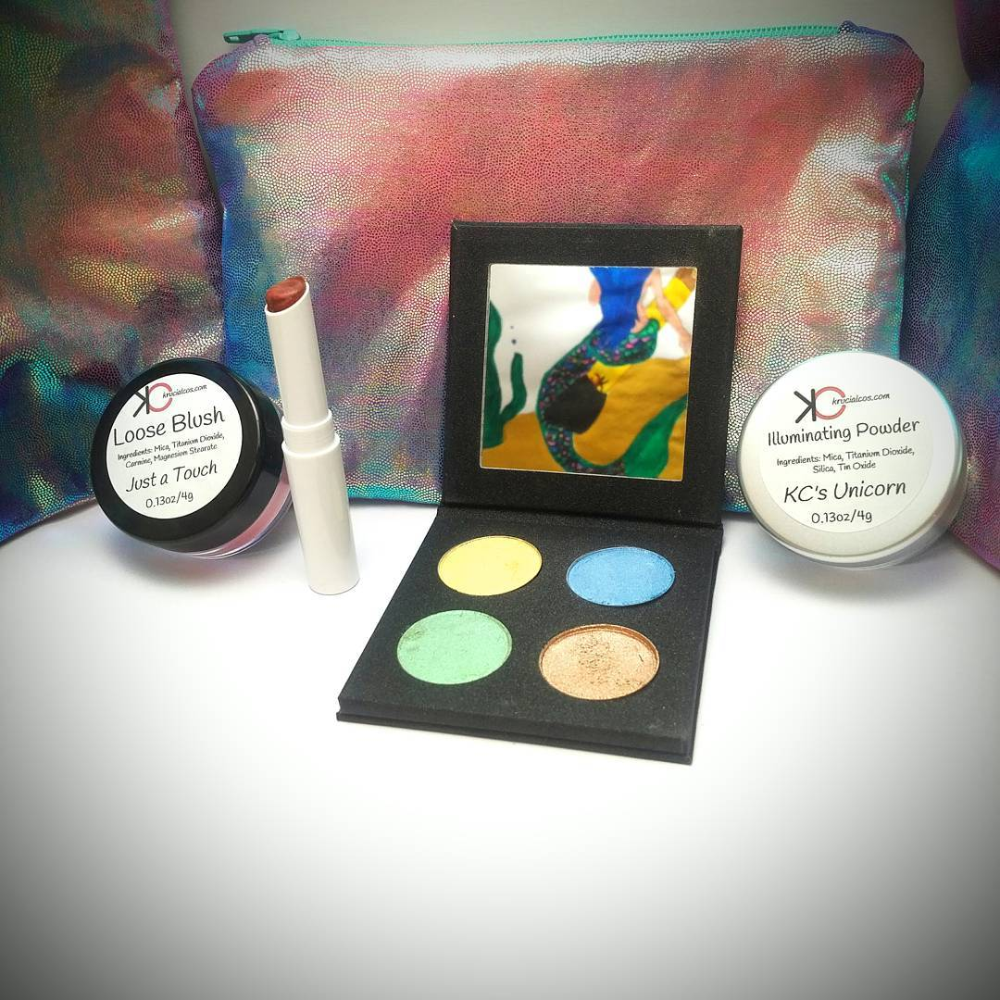

Luxury products. Naturally handmade.
Krucial Cos was founded in April 2014 by Kaitlyn McCarthy. She is a college grad from Johnson & Wales University in Providence, RI holding Bachelor of Science degrees in both Marketing and in Management. At the age of 16, Kaitlyn wrote her very first business plan- for a high-end fashion boutique. Originally she had planned to attend college for fashion and interior design but then switched to business instead. Finding a job in this economy has not been easy, especially for those starting out. Since her graduation in 2012, she had picked up a major interest in “indie nail polish”, or homemade/handmade polish by very small businesses. She has always been crafty and loves to support local businesses, especially ones with unique ideas and crafts. Going back to her roots of always wanting to own her own company and go to art school, Krucial Cos was born!
Contact me: